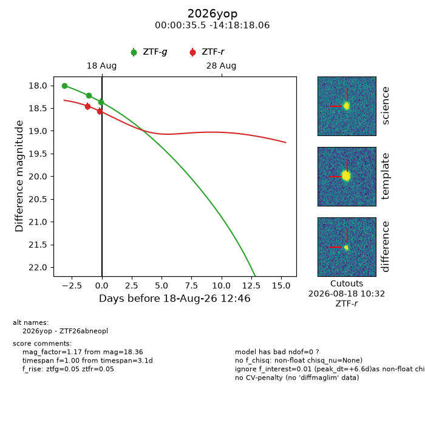
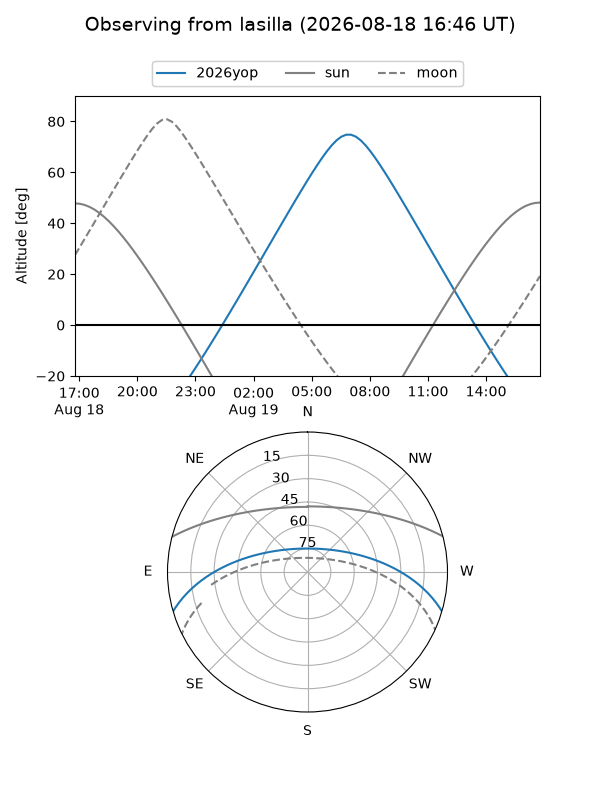
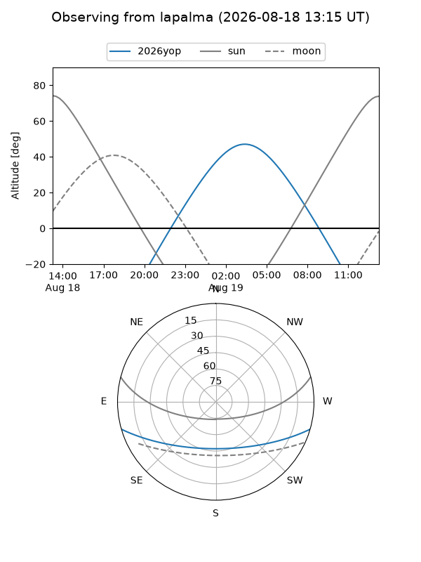
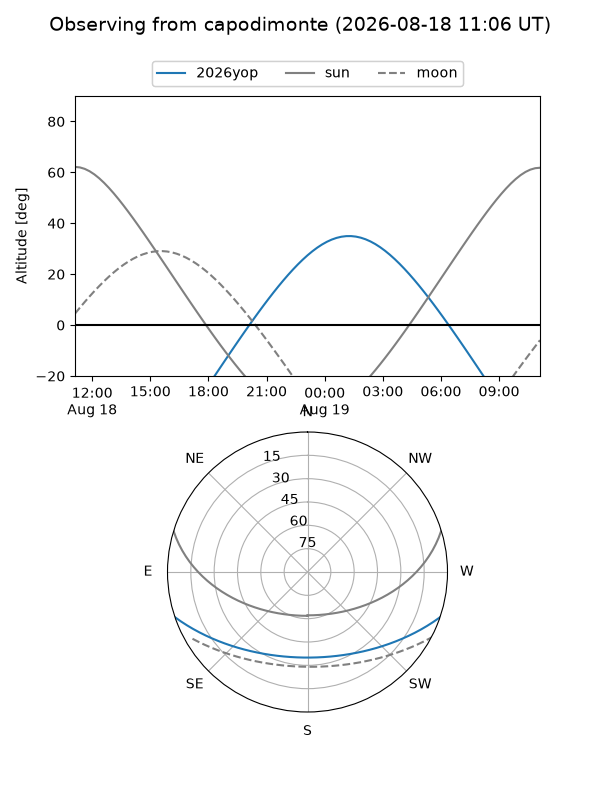
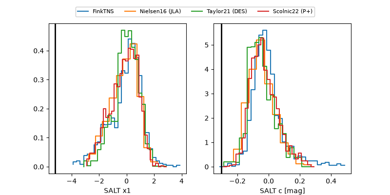

2026yop
Target 2026yop at 2026-08-18 12:50
Aliases and brokers:
FINK-ZTF: ztf.fink-portal.org/ZTF26abneopl
Lasair-ZTF: lasair-ztf.lsst.ac.uk/objects/ZTF26abneopl
ALeRCE-ZTF: alerce.online/object/ZTF26abneopl
YSE-PZ: ziggy.ucolick.org/yse/transient_detail/2026yop
TNS name: wis-tns.org/object/2026yop
Direct TNS query: direct search
alt names
ZTF26abneopl (ztf,fink_ztf)
2026yop (tns,yse)
Coordinates:
equatorial (ra, dec) = 0.1477,-14.30502
equatorial (HMS+DMS) = 00:00:35.45,-14:18:18.06
galactic (l, b) = (77.6471,-72.53904)
Flags:
TNS type: nan
peak dt: +6.6
Photometry:
last ztfg=18.36, ztfr=18.57
3 ztfg, 2 ztfr detections
Lightcurve

Visibility



Additional plots
